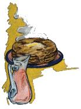
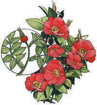

Lately, more and more people have begun to understand just how limited-in both variety and nutritional value-our "modern" diets have become. This realization has sparked a new and widespread interest in the culinary and therapeutic uses of herbs . . . those plants which-although not well-known today-were, just one short generation ago, honored "guests" on the dinner tables and in the medicine chests of our grandparents' homes. In this regular feature, MOTHER examines the availability, cultivation, and benefits of our "forgotten" vegetable foods and remedies . . . and-we hope-helps prevent the loss of still another bit of ancestrol lore.
The last rose of summer has long faded and gone . . . but it left behind a little bright red or orange fruit that's just loaded with vitamin C (it contains smaller-but still significant-amounts of calcium, phosphorus, and iron, as well). In fact, every teaspoon of rose hips that you include in your teapot can provide you with as much of the valuable supplement as five or six large oranges!
Since rose bushes are members of the Rosaceae family (which includes strawberries, apples, cherries, plums, and raspberries), it's not surprising that the best of these little hips have a tart, applelike taste that can be enjoyed in the form of jams, jellies, and syrups. One of the most flavorful species is the Japanese Rose ( Rosa rugosa ), which grows so abundantly in the eastern United States that it's now considered a nuisance.
The rose's vitamin-packed seed pods are ripe when their colors are bright and the berries detach easily from the stalk. To brew the fresh hips as tea, just chop them up and let the berries steep in hot water until the desired strength is reached . . . or mix the diced fruit with your favorite tea blend.
You'll probably want to dry and store some rose hips for future use, too. If you're in no hurry to get the process over with, simply slice off the top and bottom tips . . . cut the hips in half . . . and spread them out for several days in an airy place (but avoid direct sunlight or high temperatures, to prevent the loss of vitamin C).
You can dehydrate the hips more quickly, of course, by placing them-for about an hour-in an oven set at less than 200°F. (Your gas stove's pilot light will serve this purpose.) Store the dried pods in airtight containers and grind them as they're needed.
For a marvelous jelly or jam, add 1/2 cup of water to 1 cup of dried fruit (use somewhat less liquid if you're starting with fresh hips) and simmer the "stew" until the skins burst and the pulp floats free. Strain the juice and pulp through cheesecloth or a colander to remove the seeds. (Some people grind, reboil, and strain the kernels to extract their vitamin E, and then use the resulting healthful fluid in place of the water called for in other jam and jelly recipes.)
Next, take your rose-colored pureé . . . add half again as much honey, along with cinnamon and/ or cloves to taste . . . boil . . . add pectin . . . boil again . . . then-when the mixture "tests"-spoon it into sterilized jars and seal them immediately. (The preserve will thicken more as it cools, so don't overcook it!)
This same rose hip pure é can also be used to make a delicately flavored custard. Just blend 1 cup of pure é with 1-1/2 cups of milk, 1 cup of honey, and 1/8 teaspoon of salt. Add 4 beaten eggs . . . whip the mix again . . . and pour it into custard cups. Now, set the cups in a pan of hot water and bake them, for about an hour, at 300°F.
Rose hip syrup is an especially tasty treat when served over ice cream, waffles, pancakes, or French toast. To prepare it, barely cover the fruit with water and let it simmer until soft. Pour off the liquid, and then repeat the process. Mix the two extractions together . . . add 3/4 cup of honey for every two cups of juice . . . simmer the syrup until it thickens . . . pour it into sterilized jars . . . and seal them.
Finally, here's a rose hip dish that was once very popular with the early Spanish Californians. Simply stew the hips in very little water, add sweetener, and serve them in the cooked liquid.
Any way you consume it, this wintertime fruit-so popular with game birds, songsters, squirrels, rabbits, bears, antelope, moose, deer, and mountain sheep and goats-can provide you with a "rosy" road to good eating, drinking, and health.
|
 Rose hip syrup is tasty served over pancakes |
 One cup of rose hip tea can contain as much vitamin C as six oranges. |
|